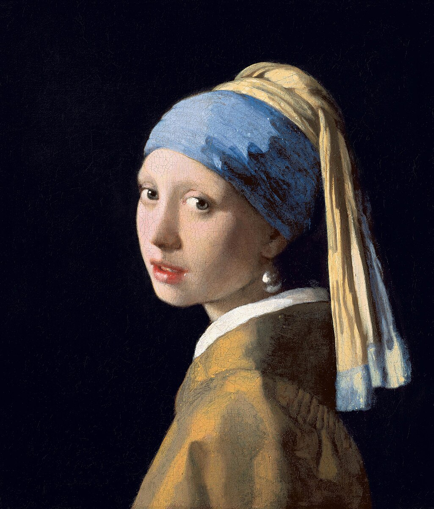

Barroco en la cultura actual
Videos sobre obras, analisis, lecturas y más sobre un Barroco contemporeaneo.
Trap sobre "Las Meninas" de Diego Velazquez

Amor Barroco y amor romántico

Videos sobre obras, analisis, lecturas y más sobre un Barroco contemporeaneo.
Trap sobre "Las Meninas" de Diego Velazquez